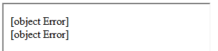
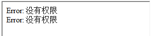
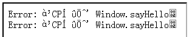
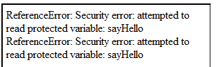
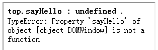
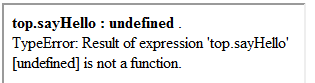

无。
在 Chrome Safari 中引用非同源页面的 window 对象的成员时不会抛出异常，而在其它浏览器中则会。
在引用非同源页面的 window 对象的成员时，Chrome Safari 中无法捕获异常，这将导致对应 catch 块中的语句不执行， 而其它浏览器则可以捕获并执行 catch 中的语句，这可能导致脚本在某些浏览器中执行错误，功能失效。
例如：
var isSameDomain = true; try { var parentName = top.parentName; //假设这里的 top.parentName 引用来自非同源页面 }
catch(e){ isSameDomain = false; }
执行这段代码，在 Chrome Safari 中变量 'isSameDomain' 的值为 true，而其它浏览器中则为 false，依赖于 'isSameDomain' 的条件判断结果在这两类浏览器中就会产生差异。
| Chrome Safari |
|---|
同源策略对于一些浏览器端程序语言，例如 JavaScript，是非常重要的安全概念，它允许运行在同一站点源页面上的脚本无明确限制的访问其它页面中方法和属性，但阻止不同站点间跨页面的方法和属性访问。 同源策略的概念可以追溯到 Netscape Navigator 2.0，现代浏览器都应用了该策略，并将其扩展到其它脚本语言或一些除直接的 DOM 操作外的机制。
“同源”的“源”指域名，应用层协议以及运行脚本的 HTML 文档的 TCP 端口，只有当两个页面的这三部分完全相同时，才可以说它们是同源。非同源的两个页面间的访问，我们称之为跨域访问。
下表举例说明了相对于 'http://www.example.com/dir/page.html' 哪些 URL 是同源的哪些是非同源的：
| URL | 结果 | 原因 |
|---|---|---|
| http://www.example.com/dir2/other.html | 成功 | |
| http://www.example.com:81/dir/other.html | 失败 | 同样的协议和主机名，但是端口不同 |
| https://www.example.com/dir/other.html | 失败 | 不同的协议 |
| http://en.example.com/dir/other.html | 失败 | 不同的主机名 |
| http://example.com/dir/other.html | 失败 | 不同的主机名，必须精确匹配 |
关于同源策略的更多信息，请参考维基百科 Same origin policy。
下面我们通过在页面的 IFRAME 中使用 'window.top' 访问非同源页面的 window 对象的成员模拟跨域操作，来重现本文讨论的问题。
这里我们在本地搭建服务器，编辑 hosts 文件（Windows 7 下文件位于 C:\Windows\System32\drivers\etc\hosts），增加两个域名映射到本地IP，模拟两个域：
127.0.0.1 domain1.example.com 127.0.0.1 domain2.example.com
在包含 IFRAME 的主页面（main.html）中定义一个全局变量和全局函数，用来被 IFRAME 中的页面脚本引用和调用：
<iframe src="http://domain2.example.com/test/iframe.html"></iframe> <script
type="text/javascript"> function sayHello(){ alert("Hello!");} window.hi = "hi";
</script>
IFRAME 页面（iframe.html）中使用 window.top 访问主页面中的成员：
<div id="msg"></div> <script type="text/javascript"> function
info(msg){document.getElementById("msg").innerHTML += msg + "<br />"} try{ var a = top.sayHello;
info("<strong>top.sayHello : " + a + " </strong>."); }catch(e){ info(e); } try { var a =
top.sayHello(); info("<strong>top.sayHello() : " + a + " </strong>."); } catch(e) { info(e);
} </script>
这里我们从 'domain1.example.com' 这个域访问 'main.html', 从 'domain2.example.com' 这个域访问 'iframe.html'， 当在 'iframe.html' 中使用 'window.top' 访问 'main.html' 中的变量及函数时，就形成了跨域访问。
页面载入完成后各浏览器中表现如下：
| IE6 IE7 |  | IE8 |  |
|---|---|---|---|
| Firefox |  | Opera |  |
| Chrome |  | Safari |  |
从测试结果中可以看出，在所有浏览器中都无法成功访问非同源页面 window 对象的成员， 但在 Chrome Safari 中只跨域引用其它页面的 window 对象的成员时不会抛异常（返回 undefined），调用时则会； 其它浏览器在跨域引用及调用其它页面的 window 对象成员时都会抛出异常。
不依赖捕获跨域引用其它页面的 window 对象成员抛出的异常来设计代码逻辑。
| 操作系统版本: | Windows 7 Ultimate build 7600 |
|---|---|
| 浏览器版本: |
IE6
IE7 IE8 Firefox 3.6.9 Chrome 7.0.517.0 dev Safari 5.0.2 (7533.18.5) Opera 10.62 |
| 测试页面: |
main.html
iframe.html |
| 本文更新时间: | 2010-09-14 |
Same origin policy cross domain try catch